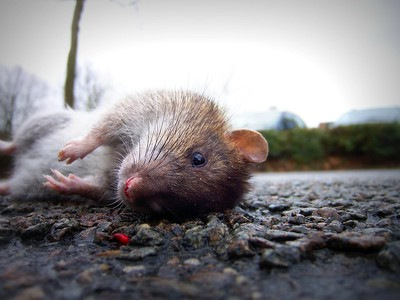
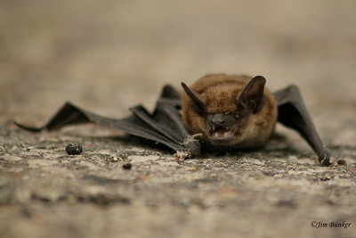

What would All Hallows’s Eve be without cats—in particular, black cats?
Not without reason, during Medieval times those inscrutable felines were
considered the “familiars” of witches: their constant companions, protectors,
and assistants in the practice of magic. In the West, black has often been
associated with evil, and so a cat with a pelt black as pitch would be looked
upon as especially inauspicious and malevolent.
Rats

Highly adaptable, the black rat (Rattus rattus) easily habituates itself to
human settlements and can be found—sometimes swarming in frighteningly great
numbers—almost anywhere that people have established cities. Largely nocturnal
creatures, they are sneaky and secretive, favoring dark, out-of-the-way places,
yet thrive right under our very noses: lurking in filthy alleyways, scurrying
through dank subway tunnels, and nesting inside the drywall of our homes. It goes
without saying that they seem to be partial to graveyards and crypts as well!
Bats

Often characterized (unfairly) as “rats with wings,” bats are by nature nocturnal
creatures. Thanks to movies and our own imaginations, everything about them screams,
“Vampire!” They sleep during the day in dark caves and belfries, they forage at night,
and some species even feed on the blood of livestock. And even though a bite from one
won’t turn you into an actual vampire, it can conceivably give you rabies, which is almost
as bad.